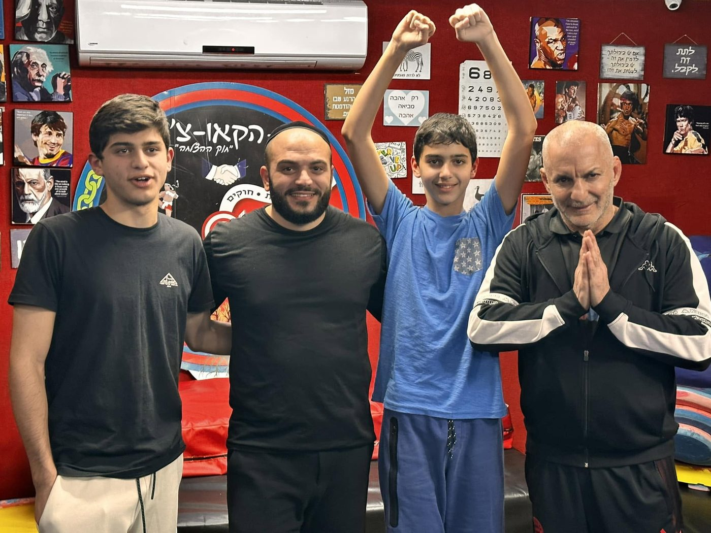
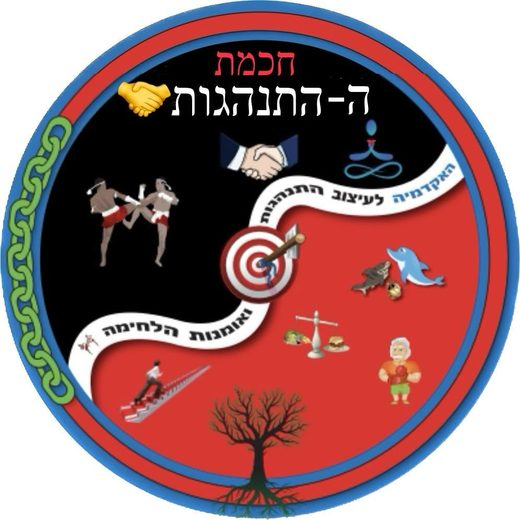

בונים לילדכם אישיות מנצחת
מפסיקים את המאבקים בבית: לומדים שליטה עצמית -
בשיטת האימון ללא הטפות מוסר!


הורים יקרים,
בעולם של היום, הילדים שלנו מוצפים בהמון גירויים – מסכים וממתקים עד פיתויים שפוגעים באיזון הפנימי שלהם.
אני מכיר את זה מקרוב.
הילד שלכם ראוי ליותר. הוא ראוי לכלים עוצמתיים שיבנו לו אישיות מנצחת ויציבה, ואתם ההורים, ראויים להרגיש שקט נפשי בביתכם.
אפשר להתחיל לבנות את זה ביחד.
האזינו לפודקאסט
רני מספר על הדרך, על השיטה ועל מה שקורה כשמחליפים הטפות מוסר באימון.
האם זה מוכר לכם ?
הפוקוס שנעלם
הקושי של הילד להתמיד, להתרכז במשימות ולמצוא מוטיבציה פנימית.
מלחמות המסכים
התסכול הבלתי פוסק מול המכשירים שממכרים, מרוקנים מאנרגיה וסוחטים את הבית.
הסערות הרגשיות
הקושי של הילד לווסת כעסים, להתמודד עם תסכולים ולהציב גבולות לעצמו.
מערכות יחסים שמתקלקלות עם הזמן
זה מתחיל בהתנגדות קטנה ואחרי כמה חודשים הופך למלחמה בבית
האווירה המתוחה
ויכוחים בלתי פוסקים על כל דבר קטן ותחושה של אובדן הסמכות ההורית.